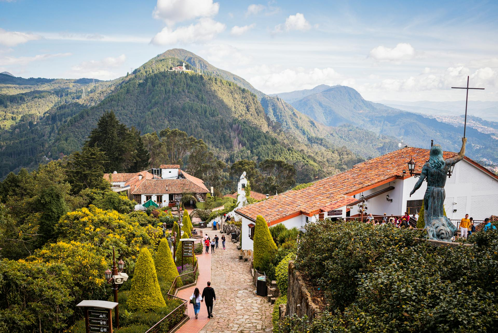
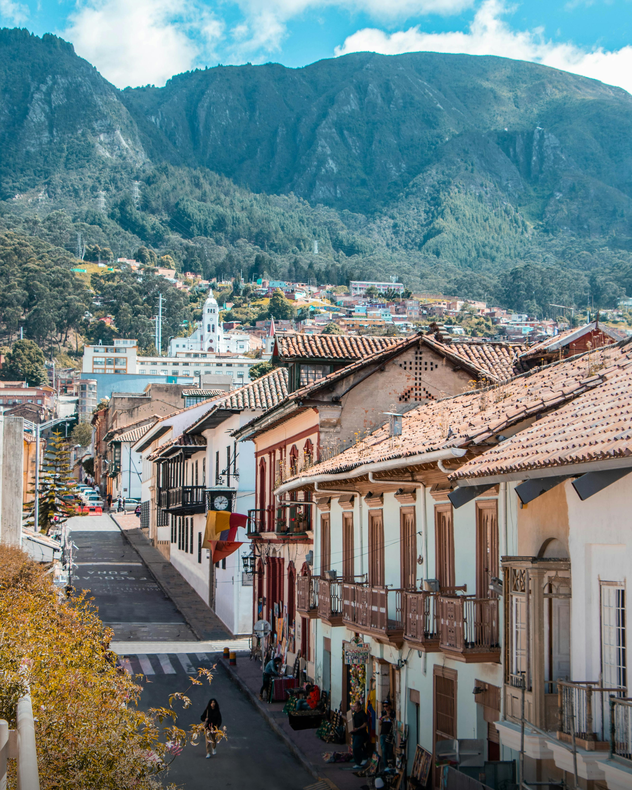
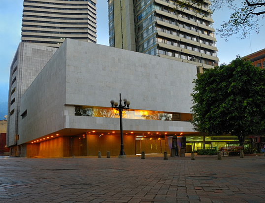
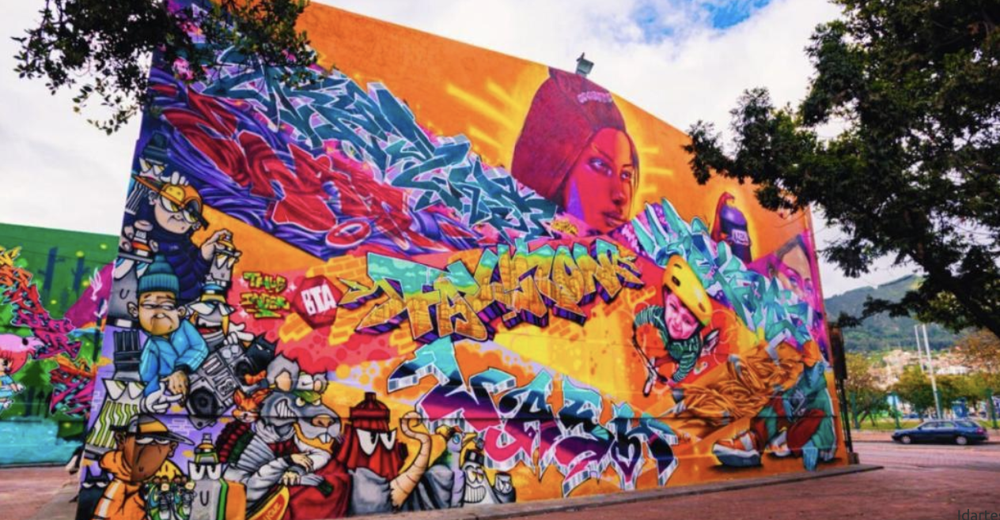
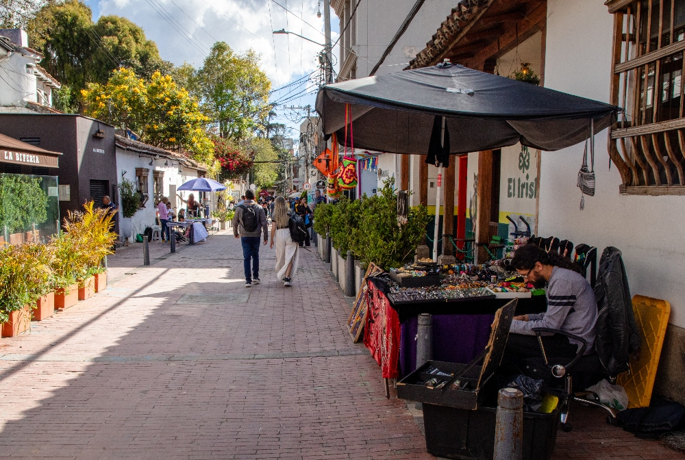
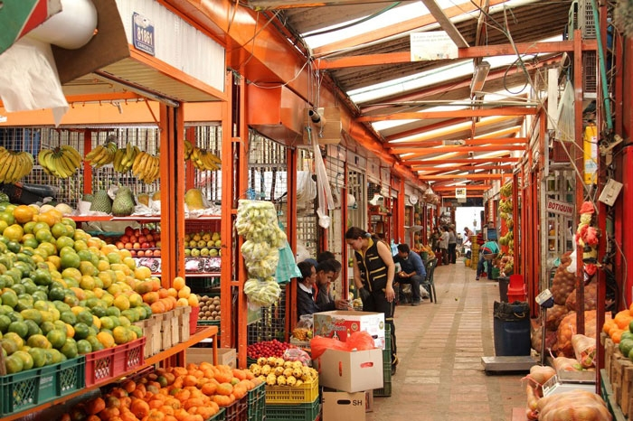

Rutas TurÃsticas
Explora los caminos que cuentan la historia viva de nuestra ciudad.
Rutas Históricas

Subida a Monserrate
El sÃmbolo indiscutible de Bogotá. A 3.152 metros de altura te espera una vista panorámica de 360° de la ciudad, la BasÃlica del Señor CaÃdo y un ambiente espiritual único. Es el plan que todos los bogotanos y visitantes deben vivir al menos una vez.
Duración: 3 horas
Caminata por La Candelaria
El corazón colonial y bohemio de Bogotá. Calles empedradas, murales, casas coloridas, plazas históricas y el ambiente artÃstico más vibrante de la ciudad. Es como caminar por un museo vivo al aire libre.
Duración: 2.5 horas
Museo del Oro
El museo más importante de América en orfebrerÃa precolombina. Más de 55.000 piezas de oro puro que cuentan la historia de las culturas muisca, quimbaya y tayrona. Es una experiencia que te deja con la boca abierta.
Duración: 4 horasRutas Alternativas

Graffiti Tour Centro
Un recorrido por el mayor museo de arte urbano de Colombia. Murales gigantes, historia polÃtica y social contada a través del grafiti. Es color, mensaje y la Bogotá más contemporánea.
Duración: 2 horas
Tarde en Usaquén
El barrio más encantador del norte. Domingos se transforma en el famoso Mercado de las Pulgas de Usaquén: artesanÃas, antigüedades, comida callejera y ambiente familiar.
Duración: 3 horas
Mercados de Bogotá
El corazón gastronómico de la ciudad. El mercado más grande y colorido de Colombia: frutas exóticas, flores, hierbas, carnes, mariscos y el famoso “mercado de las floresâ€.
Duración: 3.5 horas